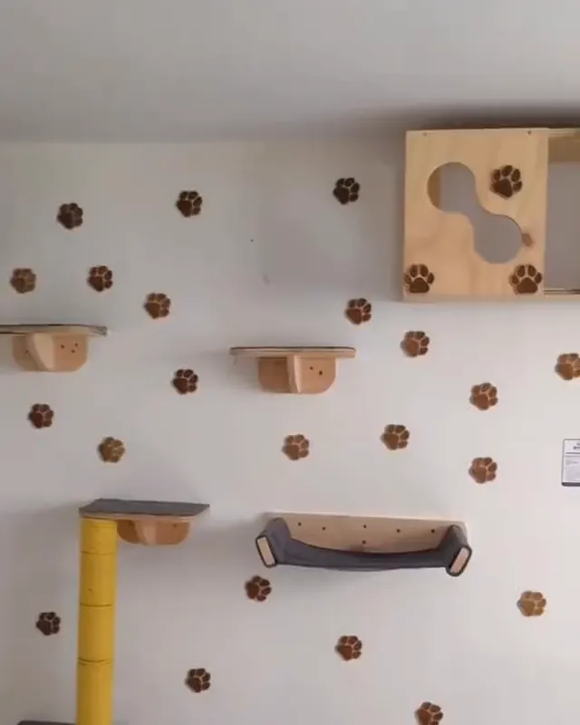
Rascadores Zukini
Su mundo
en las alturas
Repisas, hamacas, pasarelas y torres con yute, hechas a mano para que tu gato trepe, rasque y descanse a su manera.
Repisas y rascadores
Una pared,
mil recorridos
Escalones, hamacas y postes de yute que convierten una pared vacía en un circuito para trepar, saltar y descansar.
Pasarelas y casitas
Su mirador favorito
Puentes y cajas de madera para recorrer la habitación por las alturas, que es donde un gato se siente más seguro.
Sobre Zukini
Hechos a mano para gatos que aman las alturas
En Rascadores Zukini fabricamos repisas, hamacas, pasarelas, casitas y torres para que tu gato tenga un espacio propio donde trepar, rascar, jugar y dormir la siesta.
Trabajamos con madera y cuerda de yute natural, y le damos a cada pieza un detalle que nos identifica: la silueta de unas orejitas de gato. Cuéntanos cómo es tu casa y armamos el circuito ideal para tu compañero.
Cotizar por WhatsApp-
Hecho a mano
Piezas de madera trabajadas una a una, con terminaciones cuidadas.
-
Yute natural
Postes y plataformas forrados con cuerda de yute, ideal para rascar.
-
Pensado en altura
Repisas, hamacas y pasarelas que aprovechan la pared y dejan libre el piso.
-
Para tu espacio
Balcón, living o dormitorio: el circuito se adapta a tu pared y a tu gato.
Balcones y ventanas
Con vista
a todo
Cajas mirador y pasarelas para que tu gato observe la calle desde las alturas, con la protección de la red del balcón.
Orejitas de gato
Nuestra firma
Cada casita lleva recortada la silueta de un gato: un detalle que se repite en todos los muebles Zukini.
Nuestros productos
Todo lo que tu gato necesita para subir
Cada pieza se puede combinar con las demás. Elige la que más te guste o cuéntanos tu idea y la armamos juntos.
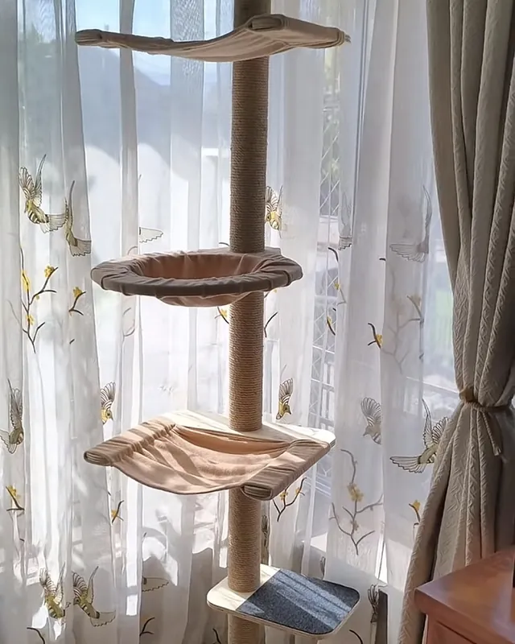
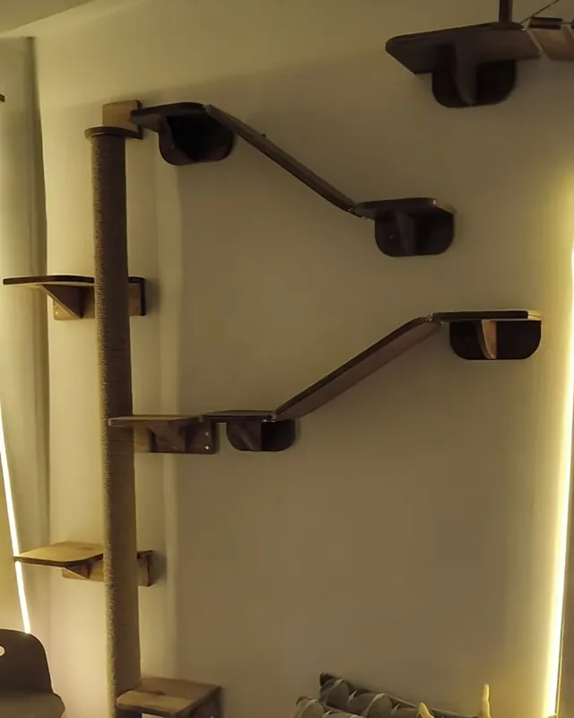
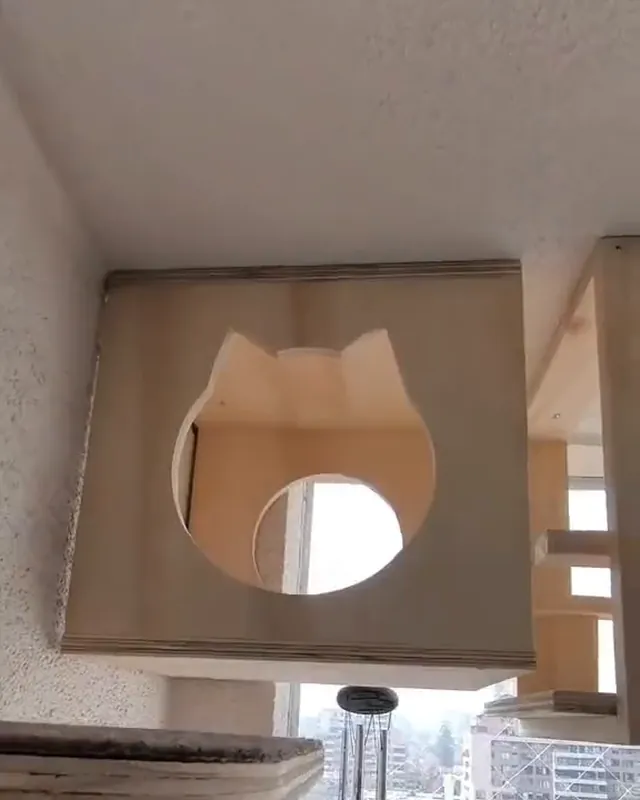
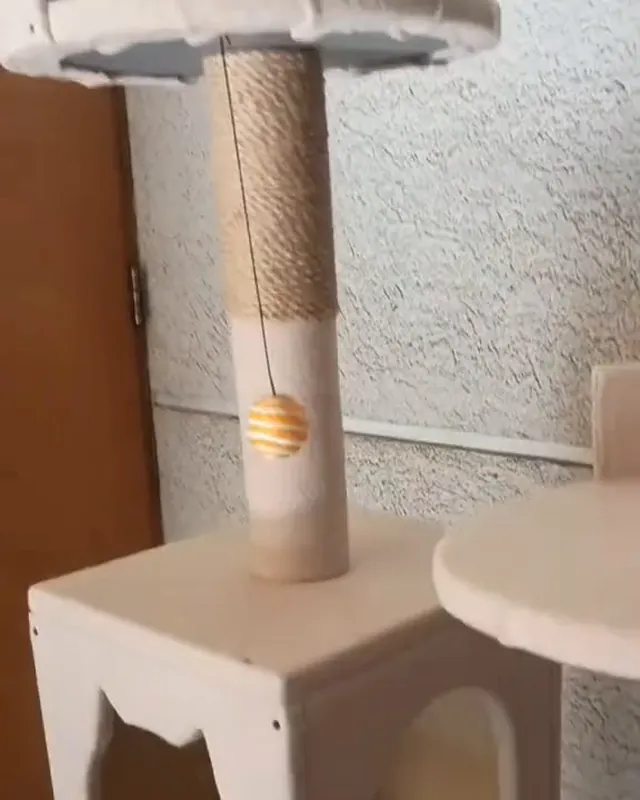
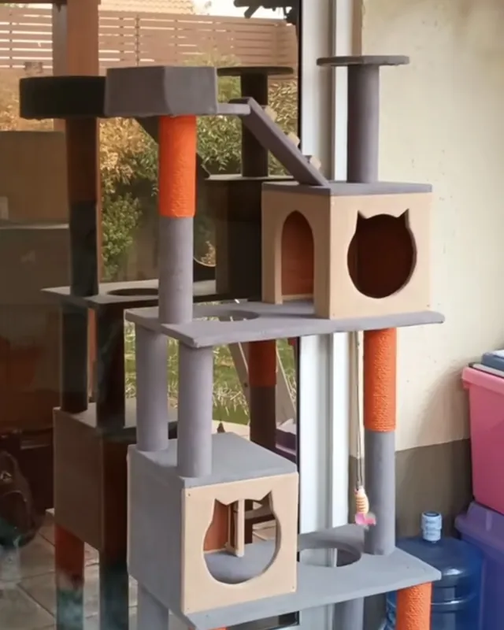
Instinto felino
Rascar, trepar y mirar desde lo alto
Los gatos no son caprichosos: cada una de estas conductas responde a un instinto. Darles un lugar donde hacerlo cuida tus muebles y los hace más felices.
-
Rascar
Afilan las uñas, estiran todo el cuerpo y dejan su marca olfativa. Un poste de yute firme y lo bastante alto es su lugar ideal.
-
Trepar
Saltar y subir es ejercicio y diversión. Con repisas a distintas alturas, una pared se convierte en un circuito.
-
Observar
Desde arriba se sienten seguros y controlan su territorio. Una hamaca junto a la ventana es su televisión favorita.
Torres y rascadores
Yute
para rascar
Postes forrados en cuerda de yute natural, la textura que los gatos buscan para afilar sus uñas y estirarse.
Multinivel
Una torre,
mil juegos
Plataformas, casitas y juguetes colgantes: un parque completo que ocupa poco espacio en el piso.
Galería
Así se ven en casa
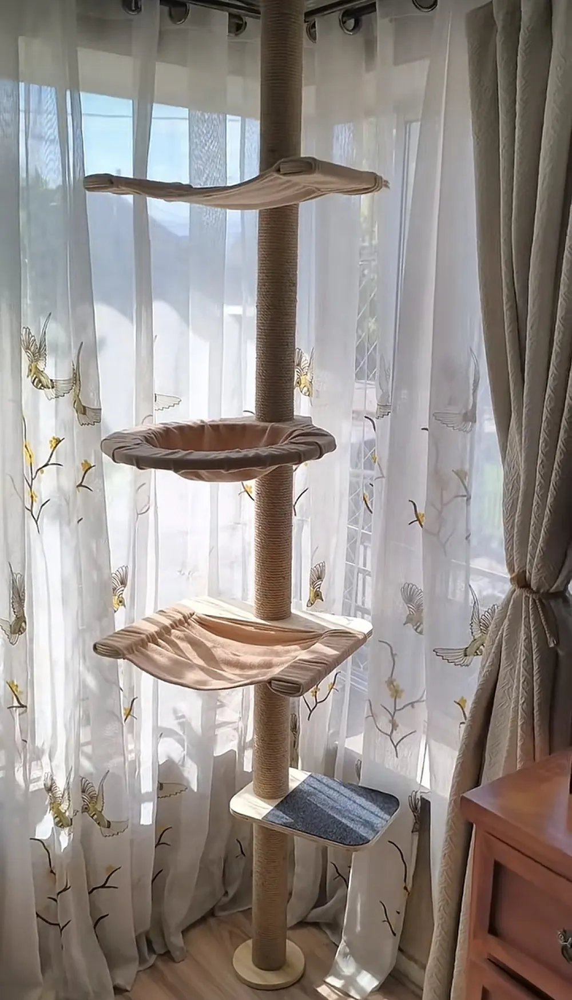
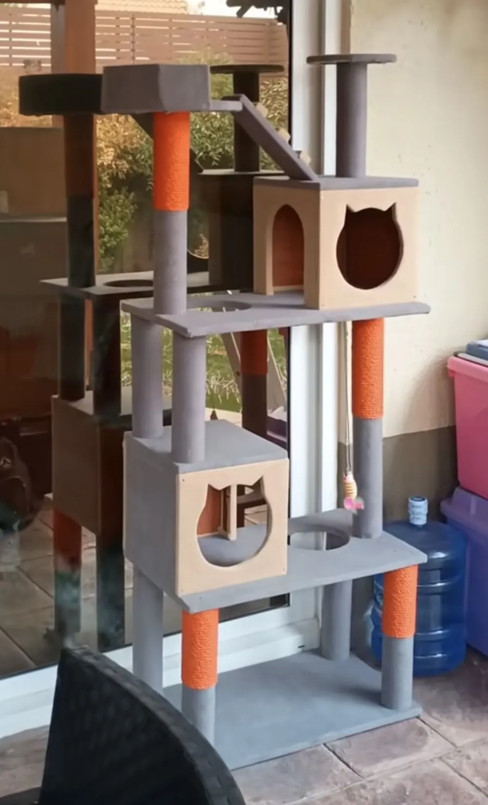
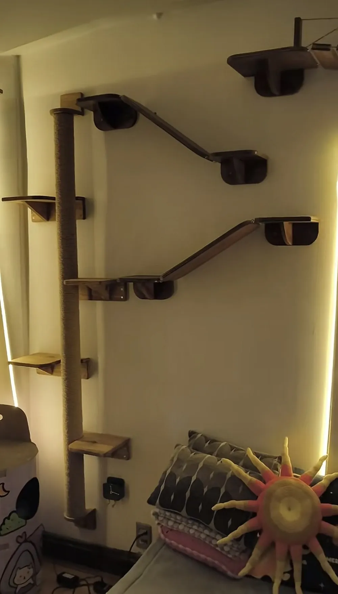
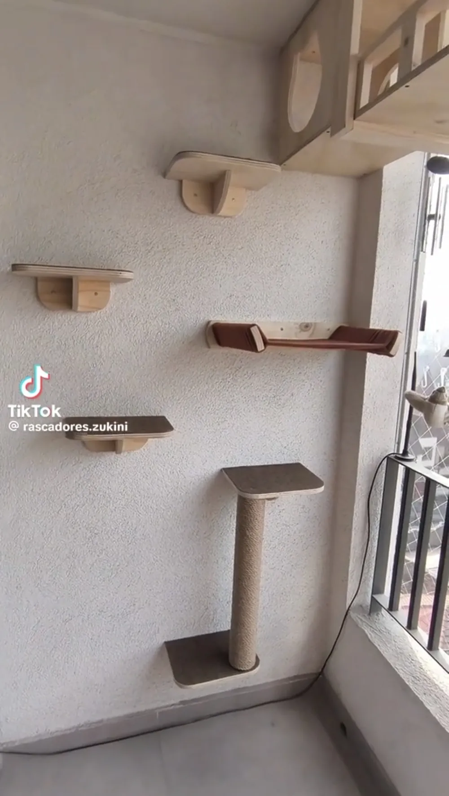
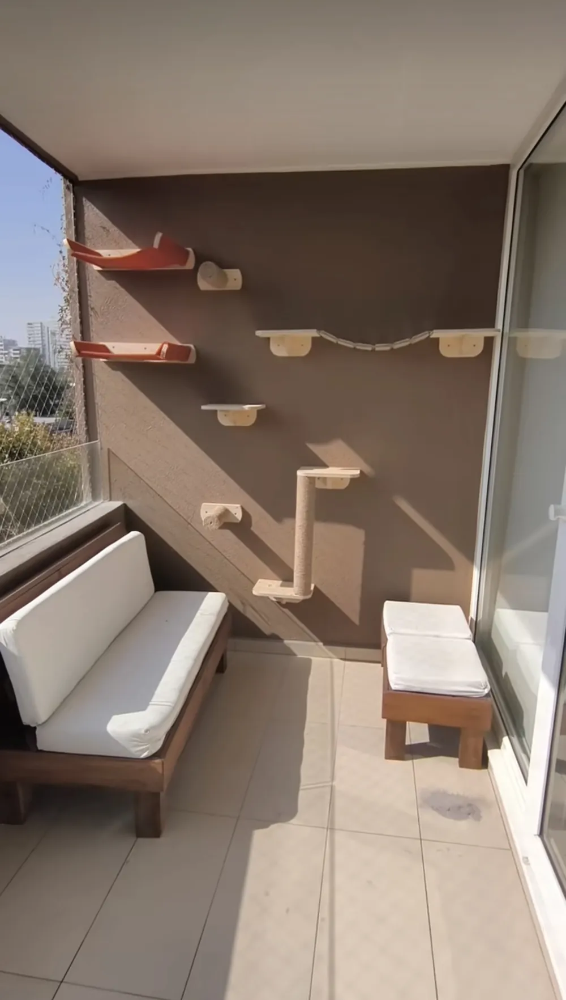
Cómo trabajamos
Del WhatsApp a tu pared en cuatro pasos
-
Cuéntanos
Escríbenos por WhatsApp con fotos de tu espacio, medidas aproximadas y algunos datos de tu gato.
-
Diseñamos
Te proponemos qué piezas instalar y cómo distribuirlas para que el recorrido sea cómodo y seguro.
-
Fabricamos
Construimos tus piezas en madera y las forramos con yute y telas resistentes.
-
A disfrutar
Recibes tu pedido y tu gato estrena su nuevo mundo en las alturas.
¿Hablamos?
Cuéntanos de tu gato y de tu espacio
Escríbenos por WhatsApp y te ayudamos a elegir las piezas ideales para tu hogar.
Escribir por WhatsApp